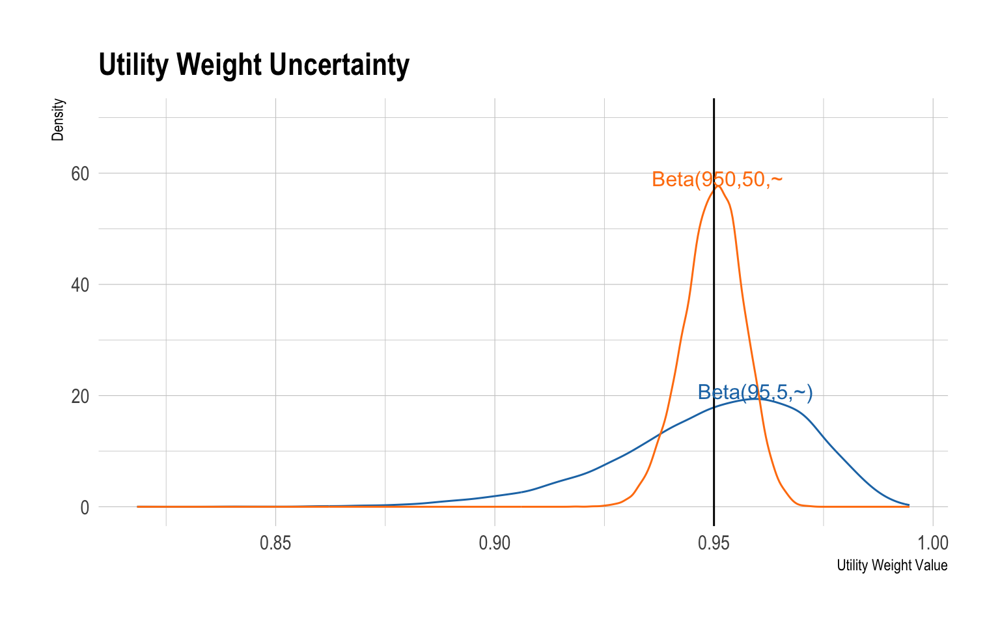

9. Systematic Approaches to Understanding Model Uncertainty
Learning Objectives and Outline
Learning Objectives
- Discuss common sources of uncertainty in decision models.
- Explain how to draw parameter values from an uncertainty distribution.
- Understand inputs and outputs of a PSA
- Characterize decision uncertainty using cost-effectiveness acceptability curves and frontiers.
Lecture Outline
- Why Do We Study Uncertainty in a Decision Model?
- How Do We Conduct a Probabilistic Sensitivity Analysis?
- How Do We Summarize PSA Results?
1. Why Do We Study Uncertainty in a Decision Model?
Two Fundamental Questions of Decision Analysis
- Which strategies are cost-effective given constraints and values and based on current evidence?
Two Fundamental Questions of Decision Analysis
- Which strategies are cost-effective given constraints and values and based on current evidence?
- Model outcomes (e.g., ICERs) will be sensitive to all sources of uncertainty.
- Key Question: Does this sensitivity change decisions?
Two Fundamental Questions of Decision Analysis
- Should we invest more resources to reduce uncertainty in our decisions?
Role of Probabilistic Sensitivity Analysis in a Decision Model
- Quantify the degree of decision uncertainty in our model.
- Is it worth pursuing additional research to reduce uncertainty?
Different Types of Uncertainty
- First-order: Stochastic uncertainty from simulating individual patients.
- Each patient will have a different “experience” in the model, which will create variation in model outputs (e.g., total costs, QALYS) both within the model and across different model runs.
- Not relevant for Markov cohort models because those models are deterministic—they capture the average experience of a population, and do not simulate individual patient trajectories within that population.
- Relevant source of uncertainty for discrete event simulation and microsimulation models.
- Can often be minimized via modeling choices (i.e., simulate a lot of patients!)
Different Types of Uncertainty
- First-order: Stochastic uncertainty from simulating individual patients.
- Second-order: Uncertainty in the “true” value of underlying parameters.
- Model parameters are often estimated with uncertainty (e.g., 95% confidence interval)
- You may have assumed or calibrated parameters not rooted in a published research study; there is uncertainty involved in these processes, too!
Different Types of Uncertainty
- First-order: Stochastic uncertainty from simulating individual patients.
- Second-order: Uncertainty in the “true” value of underlying parameters.
- Model structure uncertainty: Different choices on how to construct the structure of your model will result in different outcome estimates.
- Different choices for cycle correction (e.g., half-cycle, Simpson’s 1/3, etc.)
- Different choices for how to construct transition probability matrices (e.g., rate-to-probability conversion formulas vs. embedding via Matrix exponentiation)
Heterogeneity vs. Uncertainty
- Uncertainty: variation in model outputs due to stochastic experiences of patients, sensitivity to input parameter values, etc.
- Heterogeneity: variation in model outputs due to differences in patient characteristics.
Heterogeneity vs. Uncertainty
When Does Uncertainty Matter?
When Does Uncertainty Matter?
When Does Uncertainty Matter?
When Does Uncertainty Matter?
When Does Uncertainty Matter?
When Does Uncertainty Matter?
In this example, model outputs are sensitive to uncertainty, but decisions are not.
When Does Uncertainty Matter?
In this example, model outputs are sensitive to uncertainty, but decisions are not.
When Does Uncertainty Matter?
Both model outputs and decisions are sensitive to uncertainty.
When Does Uncertainty Matter?
Both model outputs and decisions are sensitive to uncertainty.
Markov Cohort Models
Note that this picture represents common scenarios; uncertainty may be greater or lesser in any particular modeling context.
DES and Microsimulation
Note that this picture represents common scenarios; uncertainty may be greater or lesser in any particular modeling context. DES = discrete event simulation
Probabilistic Sensitivity Analysis
2. How Do We Conduct Probabilistic Sensitivity Analyses?
Idea
- Run the model many times, each time drawing a given parameter value from its uncertainty distribution.
- Collect the parameter values and model outputs (e.g., total costs and QALYs) in a probabilistic sensitivity analysis (PSA) dataset.
- Analyze the PSA results to construct uncertainty estimates for ICERs, NMB/NHB, etc.
- PSA results can also be used for value of information that quantify decision uncertainty and the value of future research to reduce uncertainty.
How Do We Draw PSA Values?
- Central limit tells us that distribution for many estimated parameters is normal.
- However, often we do not rely on a single parameter estimate, but rather on a range of estimates from the literature.
- In any PSA, we want to specify parameter uncertainty in such a way as to capture the overall level of uncertainty in model parameters.
How Do We Draw PSA Values?
| Parameter Type | Distribution |
|---|---|
| Probability | beta |
| Rate | gamma |
| Utility weight | beta |
| Right skew (e.g., cost) | gamma, lognormal |
| Relative risks or hazard ratios | lognormal |
| Odds Ratio | logistic |
How Do I Draw Values
https://yuhanxuan.shinyapps.io/shiny4dist/
Constructing a PSA Sample
For a given iteration j
- Draw separate PSA values from the uncertainty distributions in your model.
- Run the model and calculate model outputs (e.g., total costs and QALYs for each strategy).
- Record the PSA parameter values and the outcome results in a table.
- Repeat 1-3 many times.
Common PSA Distributions in Amua
| Parameter Type | Distribution | Amua |
|---|---|---|
| Probability | beta | Beta(shape1,shape2,~) |
| Rate | gamma | Gamma(shape, scale, ~) |
| Utility weight | beta | Beta(shape1,shape2,~) |
| Right skew (e.g., cost) | gamma, lognormal | LogNorm(shape,scale,~) |
| Relative risks or hazard ratios | lognormal | LogNorm(shape,scale,~) |
| Odds Ratio | logistic | Logistic(location, scale) |
Exmample: Uncertainty in Utility Weight
- Base case value: 0.95
- Sample from
Beta(95,5,~) - Alternatively, sample from
Beta(950,50,~)
Exmample: Uncertainty in Utility Weight
Interactive Amua Session
3. How Do We Summarize PSA Results?
How Do We Summarize PSA Results?
- Plot costs and QALYs of each iteration to show degree of variation in estimates.
- Figure plots values at each iteration, the average across 1,000 iterations (large points) and ellipses that capture ~95% of points.
Cost Effectiveness Acceptability Curves
CEACs summarize the degree of uncertainty as captured by our PSA.
CEAC represents the (Bayesian) probability of each option being cost-effective at different levels of the cost-effectiveness threshold \lambda.
Cost Effectiveness Acceptability Curves

Constructing the CEAC
- Define a WTP value.
\lambda = 50000
Constructing the CEAC
- Use the PSA sample to calculate the Net Monetary Benefit (NMB) and/or the Net Health Benefit (NHB) of each strategy.
Net Monetary Benefit
TOTQALY * \lambda - TOTCOST
Net Health Benefit TOTQALY - $$
PSA Sample
| PSA_ID | totcost_trtA | totcost_trtB | totcost_trtC | totcost_trtD | totcost_trtE | totqaly_trtA | totqaly_trtB | totqaly_trtC | totqaly_trtD | totqaly_trtE |
|---|---|---|---|---|---|---|---|---|---|---|
| 1 | 19619 | 25588 | 37065 | 23998 | 40797 | 18.537 | 18.615 | 18.726 | 18.653 | 18.653 |
| 2 | 11777 | 17379 | 36873 | 19454 | 45568 | 17.011 | 17.108 | 17.197 | 17.135 | 17.135 |
| 3 | 13292 | 19269 | 33790 | 19886 | 41933 | 17.251 | 17.359 | 17.511 | 17.462 | 17.462 |
| 4 | 14652 | 19102 | 25154 | 19246 | 33977 | 16.128 | 16.131 | 16.378 | 16.254 | 16.254 |
| 5 | 13287 | 15913 | 26998 | 18688 | 39153 | 15.938 | 16.037 | 16.141 | 16.076 | 16.076 |
| 6 | 14959 | 17506 | 32929 | 20603 | 49327 | 16.016 | 16.089 | 16.287 | 16.183 | 16.183 |
Net Monetary Benefit
| PSA_ID | NMB_A | NMB_B | NMB_C | NMB_D | NMB_E |
|---|---|---|---|---|---|
| 1 | 907239 | 905168 | 899245 | 908648 | 891849 |
| 2 | 838749 | 838035 | 822957 | 837314 | 811200 |
| 3 | 849279 | 848687 | 841748 | 853212 | 831165 |
| 4 | 791727 | 787466 | 793733 | 793440 | 778708 |
| 5 | 783630 | 785914 | 780057 | 785112 | 764647 |
| 6 | 785829 | 786922 | 781411 | 788536 | 759811 |
Identify the Optimal Strategy
- For each iteration, determine which strategy maximizes NMB/NHB.
- This is the optimal strategy for a given \lambda value.
Identify the Optimal Strategy
| PSA_ID | NMB_A | NMB_B | NMB_C | NMB_D | NMB_E |
|---|---|---|---|---|---|
| 1 | 907239 | 905168 | 899245 | 908648 | 891849 |
| 2 | 838749 | 838035 | 822957 | 837314 | 811200 |
| 3 | 849279 | 848687 | 841748 | 853212 | 831165 |
| 4 | 791727 | 787466 | 793733 | 793440 | 778708 |
| 5 | 783630 | 785914 | 780057 | 785112 | 764647 |
| 6 | 785829 | 786922 | 781411 | 788536 | 759811 |
Identify the Optimal Strategy
| PSA_ID | MAX_IS_A | MAX_IS_B | MAX_IS_C | MAX_IS_D | MAX_IS_E |
|---|---|---|---|---|---|
| 1 | 0 | 0 | 0 | 1 | 0 |
| 2 | 1 | 0 | 0 | 0 | 0 |
| 3 | 0 | 0 | 0 | 1 | 0 |
| 4 | 0 | 0 | 1 | 0 | 0 |
| 5 | 0 | 1 | 0 | 0 | 0 |
| 6 | 0 | 0 | 0 | 1 | 0 |
How Often is the Stratgy the Optimal?
- The average of this binary indicator across all PSA model runs is the fraction of the time each strategy is optimal for a given value of \lambda.
How Often is the Strategy the Optimal?
| lambda | MAX_IS_A | MAX_IS_B | MAX_IS_C | MAX_IS_D | MAX_IS_E |
|---|---|---|---|---|---|
| 50000 | 0.1667 | 0.1667 | 0.1667 | 0.5 | 0 |
How Often is the Strategy the Optimal?
- Now repeat this exercise across a range of values for \lambda.
How Often is the Strategy the Optimal?
| lambda | MAX_IS_A | MAX_IS_B | MAX_IS_C | MAX_IS_D | MAX_IS_E |
|---|---|---|---|---|---|
| 20000 | 1.0000 | 0.0000 | 0.0000 | 0.0000 | 0 |
| 40000 | 0.1667 | 0.1667 | 0.0000 | 0.6667 | 0 |
| 50000 | 0.1667 | 0.1667 | 0.1667 | 0.5000 | 0 |
| 60000 | 0.0000 | 0.3333 | 0.1667 | 0.5000 | 0 |
| 80000 | 0.0000 | 0.0000 | 0.1667 | 0.8333 | 0 |
| 100000 | 0.0000 | 0.0000 | 0.1667 | 0.8333 | 0 |
| 120000 | 0.0000 | 0.0000 | 0.3333 | 0.6667 | 0 |
| 140000 | 0.0000 | 0.0000 | 0.5000 | 0.5000 | 0 |
| 160000 | 0.0000 | 0.0000 | 0.5000 | 0.5000 | 0 |
| 180000 | 0.0000 | 0.0000 | 0.6667 | 0.3333 | 0 |
| 200000 | 0.0000 | 0.0000 | 0.6667 | 0.3333 | 0 |
How Often is the Strategy the Optimal?
- We can now plot these data:
- x-axis: \lambda.
- y-axis: Fraction/percent of the time each strategy is optimal.
- This is the Cost-Effectiveness Acceptability Curve
Cost Effectiveness Acceptability Curve (CEAC)

Interactive Amua Session
What Does the CEAC Tell Us?
Fenwick et al. (2001) the probability of being cost-effective cannot be used to determine the optimal option.
If the objective is to maximize health gain, decisions should be made based on expected net benefit, regardless of the uncertainty associated with the decision.
Cost Effectiveness Acceptability Frontier
- Layer you can add to the CEAC.
- Shows the probability that the optimal option is cost-effective at different \lambda values.
- The CEAF is not necessarily the top “envelope” or region of the CEAC!
Cost Effectiveness Acceptability Frontier
Cost Effectiveness Acceptability Frontier
- Determine average costs and QALY for each strategy across all PSA iterations.
- Calculate NMB/NHB based on these averages.
- Determine optimal strategy based on the strategy that maximizes NMB/NHB.
Cost Effectiveness Acceptability Frontier
- Repeat for a range of values of \lambda.
- For each strategy find the range of values of \lambda for which that strategy is optimal.
- This determines the “switch points” of the CEAF.
Cost Effectiveness Acceptability Frontier
The lowest value of \lambda for which a given strategy is optimal is \approx ICER for that strategy.
The highest value of \lambda for which a given strategy is optimal is the ICER for the next most costly option.
Cost Effectiveness Acceptability Frontier

Expected Value of Perfect Information
Recall the two questions from the beginning of this talk:
- Which strategies are cost-effective given constraints and values and based on current evidence?
- Should we invest more resources to reduce uncertainty in our decisions?
Expected Value of Perfect Information
CEAC and CEAF provide information on the degree to which uncertainty informs question 1.
These plots can help give us a sense of whether more research to reduce uncertainty may be valuable (Question 2).
Value of Information analyses provide a more concrete answer to Question 2.
Expected Value of Perfect Information
- We will not cover VOI methods in detail here, but short courses are available.
- Figure shows an instance where model is sensitive to uncertainty, but decisions are not.
- It’s not really worth pursuing additional research because we make the same decision regardless of the parameter values.
Expected Value of Perfect Information
- If decisions are sensitive to uncertainty, then the value of information is high.
- It may be worth pursuing additional research to reduce model parameter uncertainty.
Expected Value of Perfect Information
You can use VOI methods with your PSA sample to rank-order parameters in terms of their importance in informing decision uncertainty.
Next slides briefly show you how to construct one VOI measure: the expected value of perfect information.
Expected Value of Perfect Information
- Idea: What is the value of reducing all uncertainty in the model?
- Provides a rough sense of whether additional research should be pursued.
- A related concept, the expected value of partial perfect information, can be constructed to tell us which parameters (or sets of parameters) we should focus on.
Expected Value of Perfect Information
- The “ingredients” for calculating the EVPI for a given \lambda value are all in the CEAC and CEAF inputs.
Expected Value of Perfect Information
- Determine the overall optimal strategy based on NMB as determined by average costs and QALYs across all PSA model runs.
- Call this strategy s^* (e.g., s^*=D)
- NMB for this strategy is \overline{NMB}(s^*).
Expected Value of Perfect Information
- In each PSA iteration, find the optimal strategy based on the NMB for each strategy in that particular iteration.
- Call this strategy s_m (e.g., s_m=B)
- NMB for this strategy is NMB_m(s_m).
Expected Value of Perfect Information
- Now let’s think about the economic consequences of \overline{NMB}(s^*) and NMB_m(s_m)
Expected Value of Perfect Information
On average, we would select strategy s^* because it results in the highest expected health gain (i.e., it maximizes \overline{NMB}(s^*)).
But what if that decision is wrong?
Expected Value of Perfect Information
The difference between NMB_m(s_m) and \overline{NMB}(s^*) for any PSA iteration provides an estimate of the opportunity cost of making the wrong decision.
If s_m=s^*, then s_m - s^* = 0.
- There is no opportunity cost of making the wrong decision!
Expected Value of Perfect Information
The difference between NMB_m(s_m) and \overline{NMB}(s^*) for any PSA iteration provides an estimate of the opportunity cost of making the wrong decision.
If s_m>s^*, then s_m - s^* > 0.
- There is an opportunity cost to making the wrong decision.
Expected Value of Perfect Information
The average value of s_m - s^* in our PSA sample is the expected value of perfect information (EVPI)
It summarizes the degree to which there is an oportunity cost to making the wrong decision in our model.
Expected Value of Perfect Information
- Just as we did with the CEAC and CEAF, you can calculate an EVPI value for various \lambda and construct a EVPI curve.
Expected Value of Perfect Information
Expected Value of Perfect Information
- At \lambda=$100,000/QALY, there is high value of information.
- Our decision to implement one strategy over another is sensitive to uncertainty in our model.

Expected Value of Perfect Information
- Note that our ICER for strategy C is very close to $100,000.
- At a decision threshold of \lambda = $100,000/QALY, different values for model parameters could result in adoption (i.e., ICER < \lambda) or nonadoption of strategy C.
| Strategy | Cost | Effect | ICER | Status |
|---|---|---|---|---|
| A | 16454 | 17.332 | NA | ND |
| D | 24504 | 17.491 | 50478 | ND |
| C | 33443 | 17.580 | 101292 | ND |
| B | 21457 | 17.409 | NA | ED |
| E | 43332 | 17.491 | NA | D |
Expected Value of Perfect Information
- At \lambda=$10,000/QALY, there is low value of information.
- Our decision to implement one strategy over another is not sensitive to uncertainty in our model.